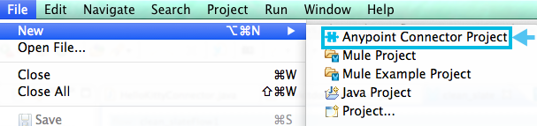
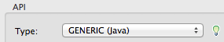

Creating an Anypoint Connector Project
To build your own Anypoint™ Connector for Studio, you can use the Anypoint Connector DevKit. In Anypoint Studio, you can add an extension module that enables you to use Anypoint Connector DevKit.

Assumptions
The DevKit documentation assumes you have:
-
A working knowledge of Mule, Anypoint Studio, and Java development in general.
-
Explored the existing connectors.
-
Access to a sandbox environment for the target system or source, and documentation of the Web service it exposes.
-
A general familiarity with the Java language, specifically the use of Java annotations. DevKit’s functionality is exposed to connector developers through Java annotations that inject code into your connector classes. The injected code provides the interface between the connector and Mule that would otherwise require each connector developer to include extensive boilerplate code. This documentation explains each DevKit-specific annotation in the context of examples. If you are not familiar with annotations, refer to a brief explanation of Java annotations.
Installing DevKit in Studio
-
To use DevKit in Studio, you must have Apache M aven installed on your local drive.
To confirm you have Maven installed, open the Anypoint Studio preferences (on a Mac click Anypoint Studio > Preferences; on a Windows computer, click Window > Preferences). Then, navigate to Anypoint Studio > Maven Settings and ensure that Maven installation home directory points to the directory in which you installed Maven. Click Test Maven Configuration to ensure that Maven is correctly configured. -
From the
Helpmenu in Anypoint Studio, select Install New Software. -
In Work with, click the down arrow and click Anypoint Addons Update Site. Click the checkbox for Anypoint DevKit Plugin, and click Next.
If the Anypoint Addons Update Site is not available in the dropdown list, click Add and copy this URL to the repository Location:http://studio.mulesoft.org/r3/addons/beta 
-
Proceed through all remaining steps in the wizard to install.
-
Restart Studio.
Building Connectors in Studio
The following sections describe several DevKit features that facilitate your work to develop and test your connector. Studio offers you the following advantages for building connectors:
-
Wizards for creating and importing connectors
-
A specialized DevKit View to easily navigate your connector
-
Lots of templates that assist in the creation of your connector
-
Quick fixes and content assistance
-
Several predefined actions to assist you in the development.
-
Generate functional tests for your connectors with just 1 click
Creating a New Anypoint Connector Project
-
Click File > New, then select Anypoint Connector Project:
Create an Anypoint Connector Project:
Field Entry Connector Name
Define a unique name for your Anypoint connector project.
Runtime
Select the Mule runtime that your connector is compatible with. The information in this page applies to all Mule versions from 3.5.0 and later.
API:
Type
Select the way your connector can access a resource with the Type field:
REST. Refer to Implementing a REST Connector:
GENERIC (Java). See Creating a Connector using a Java Client Library:
SOAP. Refer to WSDL location below in this table:
Authentication
WSDL location: (Only appears if Type is SOAP) - See Notes below.
From WSDL file or URL
Type in a location or click the browse (…) button to locate the WSDL file on your computer. You can also type or paste a URL for the WSDL file’s location.
From folder
Type in a location or click the browse (…) button to locate a folder containing the WSDL file. Note: The first WSDL file in the folder is used.
DataSense:
Add DataSense methods
Provides methods to display metadata on the resource’s entities. For more information, see Adding DataSense.
Add DataSense Query Method
Adds method for the DataSense Query Language. For more information, see Adding DataSense Query Language.
Notes on the WSDL location feature:
-
As of Mule 3.5.2, the DevKit Plugin has been improved so that for SOAP projects, the connector populates from the content in the WSDL. After creating your new SOAP connector project, your connector is ready to install in Anypoint Studio. For more information on installing a completed connector, see Installing or Updating Your Connector in Anypoint Studio.
-
This feature works with any Mule version from 3.5.0 onward.
-
This feature doesn’t support RCP-encoded WSDLs.
-
Updating the WSDL after creating a project, overrides any changes.
-
If different port types have the same methods, the generated code may cause compile errors.
-
Click Next, then enter values in the fields of the final screen of the wizard according to table below. The default values might apply without needing any changes.
Field Description Maven Settings
Click Manually set values, if needed, to change the Maven Group ID, Artifact ID, or the version of the connector.
GitHub Settings
Click Add GitHub information , if needed, to link your project to a new or existing GitHub repository.
-
Click Finish. This generates a project containing the structure with all the required elements such as images, sample docs, and some basic tests for your connector. Refer to the DevKit documentation to build upon this initial, basic structure in Installing and Testing Your Connector in Studio.

Viewing Connector Structure
This Anypoint Connector DevKit module includes an Eclipse perspective that displays all of the DevKit classes, properties, methods, processors, and configurable fields from all your connectors inside the selected project.
To configure DevKit View:
-
Click the Add View icon in the upper right of the screen and click Other.

-
Click Devkit and OK to open the DevKit Perspective.
-
Click any item in the Devkit perspective to display the code which defines it, for example:
The DevKit view lets you:
-
Double-click a Configurable field or a method to easily navigate to the line of code where it is defined.
-
Check the name with which your operation is exposed in the XML.
-
Double-click an XSD name to see examples in the sample doc file.
-
Filter to find elements in your connector.
-
Using Auto-Completion
When editing your connector’s main Java file, the auto-complete function provides a scaffold structure for several common methods that you may want to add. These structures come with rudimentary Javadoc documentation, which you should populate so that your project passes build tests successfully and your connector’s users can access reference material about your connector.
With your cursor on the @Connector class or any other @ annotation, type CTRL + spacebar to view a list of suggested entries:
For more information on @Connector and other Anypoint Connector DevKit annotations, see the Annotation Reference.
Using Templates
Templates are customizable pieces of code that you can add to your connector, and which provide a basic structure for elements you commonly use. Type the name or part of it and press [Command | Ctrl ] + space to insert the template into the current Connector Class.

Available DevKit templates:
|
Add a configurable field. |
|
Add a DataSense operation. |
|
Add a processor to your connector. There are several options with different templates. |
|
Add a transformer method. Transformers convert one input to another. |
|
Add a configurable element to a REST-based connector, such as URI params, query params, or header params. |
|
Add a |
Installing or Updating Your Connector in Anypoint Studio
After coding your connector, you can install it in Anypoint Studio and give it a test drive. Once installed, you can use your connector in a Mule Project and verify that it works as you intended.
Copy Your Connector to Anypoint Studio
-
In the package explorer of Anypoint Studio, right-click your project root.
-
Select Anypoint Connector > Install or Update:
-
At Check the items you wish to install, click Next.
-
At Review the items to be installed, click Next.
-
At Review Licenses, click I accept the terms of the license agreement, and click Finish.
-
Restart Anypoint Studio.
More DevKit Actions
The plugin also provides actions in the tool bar:
The same actions can be accessed by right clicking on the project in the package explorer:

Actions are enabled when selecting the root of a DevKit project.
Generate Tests |
Generates Functional tests cases for your connector processors. |
Install Or Update |
Installs or updates the connector in Anypoint Studio and in your local repository (see below) |
Preview Documentation |
Generates Javadoc for your connector, making use of the samples included at the sample doc file. |
Test Coverage Report |
Check all the processors and your functional test cases to evaluate how good the coverage of these is. It verifies the amount of operations that the processor has, which are being used in functional tests cases, and the existence of corresponding flows. |
Generate Sources |
Generate the sources, schemas, editors and everything required to integrate with Mule and Anypoint Studio. This can be useful if you want to debug the behavior of your connector in a Mule app. |
Enable / Disable Javadoc |
Before releasing a connector, check that your Javadocs are in order. By enabling this flag, when attempting to build you see all the processors that have missing Javadoc comments or samples. |
Using Your Connector
You can copy your connector into Anypoint Studio by just clicking the corresponding action button. To easily find it in the palette, just start typing the name in the search box.
Previewing Documentation
When you build a connector, DevKit automatically creates an HTML file that serves as a user-friendly reference for the Javadoc annotations that you have added within your code. You can preview the contents of this file without having to build the entire project. This is equivalent to running the following command from a terminal in the project folder:
mvn clean package -DskipTests javadoc:javadoc
Generating Sources
You can instruct DevKit to build your connector and generate both a .zip file and a .jar file in your project’s` /target` folder. Use these files to test, or use the connector in your instance of Studio or another separate instance of Studio. To generate the sources, right-click your project in the Package Explorer, then select Anypoint Connector > *Generate Sources. * This is equivalent to running the following command from the command console from within the project folder:
mvn clean package -DskipTests -Ddevkit.studio.package.skip=true -Ddevkit.javadoc.check.skip=true -Dmaven.javadoc.skip=true
Disabling the Javadoc Check
DevKit enforces the requirement that you provide Javadoc documentation for every callable method in your connector. For the sake of testing a work-in-progress project, however, you may want to disable the Javadoc Check to postpone documentation until the project is complete and ready for testing.
mvn clean package -Ddevkit.javadoc.check.skip=true
Adding Samples
To navigate to a sample, click on the sample link while holding the command key pressed. If the sample exists, the sample editor opens the processor’s sample.
If you enable the Javadoc check, quickfix helps you add the missing samples, which you can trigger by typing control + space.
This is what a sample looks like, it is an XML file. There are a few simple templates you can use within them:

Understanding the Generated Connector
Your Connector basically consists of a set of operations and configurable elements users populate in order to consume the API your connector was developed for.
Configurables
A configurable field in your connector looks like this in the DevKit view:
Users can configure its fields in Studio when adding a configuration global element for the connector.
After you install your connector by right-clicking the connector and clicking Anypoint Connector > Install or Update, completing the prompts, and restarting Studio, users can create Mule Projects and use your connector. The steps that follow describe how a user can configure your connector per the Configurable section of your connector.
To configure:
-
Drag an instance of your connector to the canvas
-
Double-click the connector to open its properties editor
-
Click the green plus sign next to the Connector Configuration field:

-
Set a value for the field:
As you can see, the default value you configured in the connector is presented as the initial value in the field:
Processors
Every processor in your connector is listed in the DevKit view:
Users of your connector see these processors as Operations that they can pick from a dropdown menu:
In this example, a single string was configured as an input in the method for this processor, it displays as an input field once the operation is selected:
Importing an Existing Connector
You can import a connector project, stored in a .zip file or an existing directory. Use the File > +Import* menu:

See Also
-
NEXT: Continue to Choose and Implement your Authentication method for your API.
-
Learn more about the Connector Project structure.